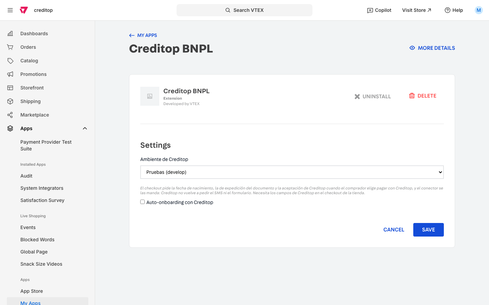
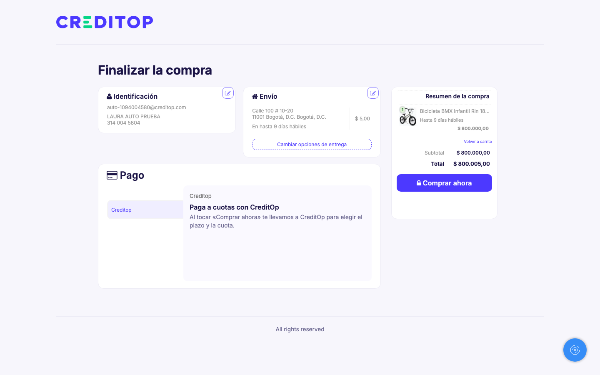
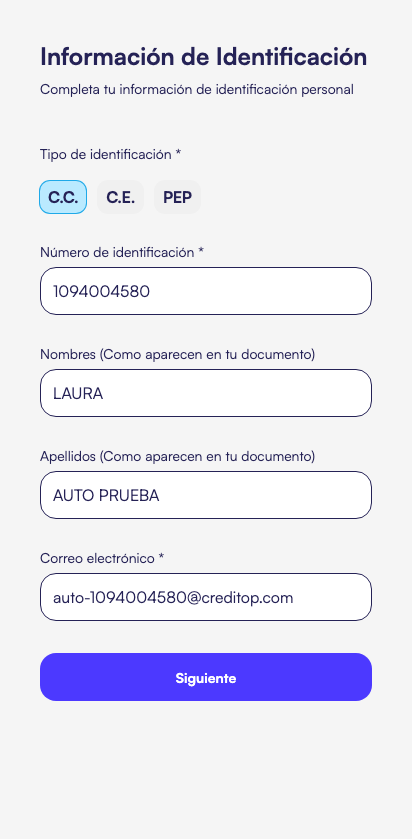
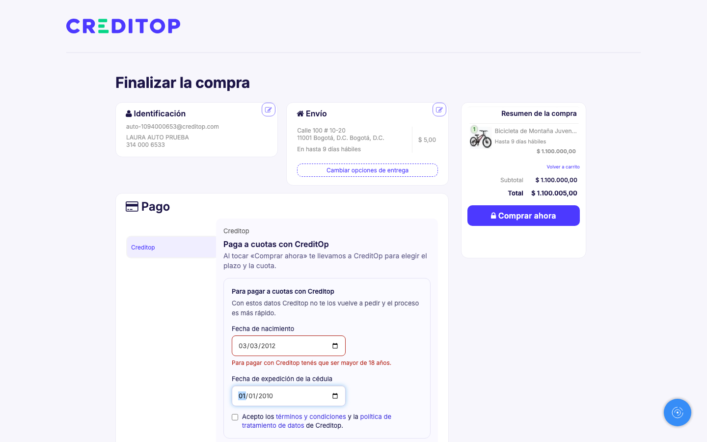
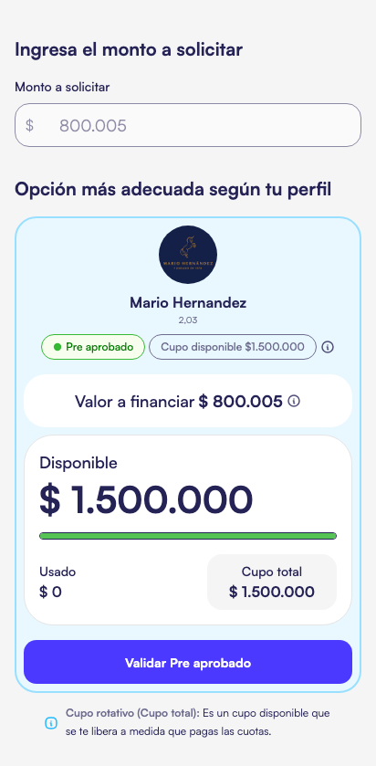
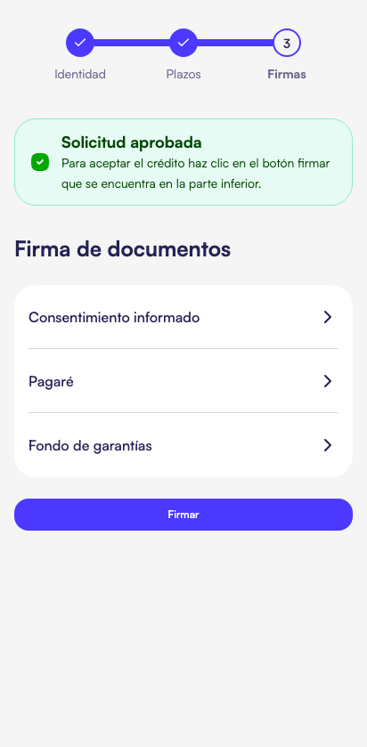
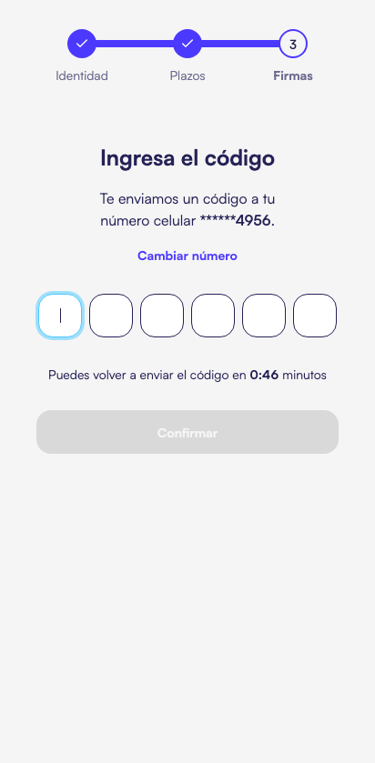

Creditop 5.1.0 en la tienda VTEX de Mario Hernández
Qué es. La app de VTEX creditop.creditop versión 5.1.0 pone a Creditop como medio de pago en el checkout. El comprador elige Creditop, VTEX lo manda al wizard de Creditop, y cuando el crédito queda autorizado la tienda recibe el pago aprobado.
Lo nuevo en la 5.1.0: el switch «Auto-onboarding con Creditop». Prendido, el checkout de la tienda pide la fecha de nacimiento, la de expedición de la cédula y la aceptación de los términos de Creditop, y Creditop ya no pide el celular, el código por SMS ni el formulario de datos. Apagado, todo funciona como en la 5.0.
Probado el 6 de noviembre en qa con una copia de la configuración de Mario: compras de punta a punta (crédito autorizado y pedido aprobado en VTEX) con el switch apagado y prendido.
Antes de instalar, confirmar dos cosas.
- Que la app 5.x se pueda instalar en la cuenta de Mario. Está publicada y desplegada por la cuenta
creditop, y otras tiendas tienen la 4 instalada. Pero VTEX registra cada versión mayor de un conector de pago como un conector aparte (creditop-creditop-v5), y no está comprobado que la 5 esté habilitada para otras cuentas. Si en el paso 2 el proveedor «Creditop» v5 no aparece, hay que pedirlo a soporte de VTEX. - Que el arreglo del cupo rotativo esté en producción (legacy-backend#1881, en revisión). Sin él, una compra por más de la mitad del cupo disponible termina bien (crédito autorizado, pedido aprobado), pero la última pantalla del comprador, «crédito aprobado», sale en blanco.
1 · En Creditop producción Operaciones
- Darle a Mario Hernández una sucursal de ecommerce con credencial de VTEX (
ecommerce_type_id = 3). Su código (hash) es el App key del paso 3. - Emitir el token de ecommerce de esa sucursal. Es el App token del paso 3 y se guarda como una clave: se pega una sola vez en VTEX y no se manda por chat.
- Si va con auto-onboarding: agregar esa sucursal a la configuración
auto_onboarding_allied_branchesde producción. Sin esto, aunque la tienda mande los datos, Creditop pide el SMS.
2 · Instalar la app en la cuenta VTEX de Mario Quien tenga acceso a su admin
- Instalar
creditop.creditop5.x en el workspacemasterde su cuenta. Por consola:vtex login <cuenta de Mario>yvtex install creditop.creditop@5.x. - En Apps → Creditop BNPL:
- Ambiente de Creditop: Producción. Sin esto el conector le habla al ambiente de pruebas.
- Auto-onboarding con Creditop: apagado por ahora. Se prende en el paso 5, cuando el checkout ya pida los datos.

3 · Crear la afiliación y la condición de pago Admin de Mario
- Configuración de la tienda → Pago → Proveedores → Nuevo proveedor → el conector Creditop v5. Datos:
Campo Valor App key el código (hash) de su sucursal de ecommerce en Creditop App token el token de ecommerce de esa sucursal Workspace masterModo producción (no el de pruebas) - Condiciones de pago → nueva → Creditop, con esa afiliación. Activarla cuando se quiera abrir el medio de pago a los compradores.
4 · Probar sin auto-onboarding Admin de Mario + Creditop
Con el switch apagado, una compra eligiendo Creditop tiene que llevar al wizard de Creditop, que pide el celular y el código. En producción una compra crea una solicitud real: coordinar con Operaciones quién compra y cancelar el pedido desde VTEX antes de autorizar el crédito si es sólo de prueba. La cancelación se acepta mientras la solicitud no esté autorizada.


5 · Prender el auto-onboarding (opcional) Admin de Mario + Creditop
Son tres cosas en la tienda, más la del paso 1.3 en Creditop:
5.1 · Registrar los campos de Creditop en el checkout
Los datos viajan en el pedido como datos propios de la app creditop. Hay que declararlos una vez en la configuración del checkout de su cuenta. Primero se lee la configuración actual, se le agrega la app y se guarda entera:
GET https://<cuenta>.vtexcommercestable.com.br/api/checkout/pvt/configuration/orderForm
POST https://<cuenta>.vtexcommercestable.com.br/api/checkout/pvt/configuration/orderForm
(la misma configuración, con esto en "apps")
"apps": [
{ "id": "creditop", "major": 1, "fields": ["birthDate", "expeditionDate", "acceptedAt"] }
]
Si ya trae otras apps en apps, se agrega ésta sin tocar las demás.
5.2 · Agregar el script al checkout
- En Storefront → Checkout → Código de su tienda: copiar el contenido de
tienda-simple/checkout-ui-custom/checkout6-custom.jsencheckout6-custom.js, y el bloque «Auto-onboarding con Creditop» decheckout6-custom.cssencheckout6-custom.css. Si ya tiene código ahí, se agrega al final. - Cambiar los enlaces de términos y política (
TERMS_URLyPOLICY_URLal principio del script) por los PDF de producción. Los que trae son los del ambiente de pruebas: falta que alguien de Creditop confirme cuáles son.
El script le pregunta a la app si el switch está prendido (https://<tienda>/_v/creditop/auto-onboarding contesta {"autoOnboarding": true|false}). Apagado no muestra nada, así que se puede dejar instalado antes de prender el switch.
5.3 · Prender el switch
En Apps → Creditop BNPL, marcar «Auto-onboarding con Creditop» y guardar. La ruta de arriba tarda hasta un minuto en contestar true.
Qué ve el comprador con el switch prendido




6 · Lo que hay que saber en el piloto
| Qué | Qué pasa | Qué hacer |
|---|---|---|
| Primeras compras después de instalar | El pago tarda 13 a 19 s mientras la app arranca en VTEX; después, menos de 1 s. | Nada: no falla. Hacer una compra de prueba al instalar. |
| Compra por más de la mitad del cupo rotativo | Crédito autorizado y pedido aprobado, pero la pantalla final queda en blanco. | Se arregla con legacy-backend#1881 en producción. |
| La tienda cancela un pedido | VTEX lo cancela; si el crédito no estaba autorizado, la solicitud sigue viva en Creditop. | Pendiente de una regla de Producto. |
| Reembolso desde VTEX | El conector contesta «reembolso manual»: Creditop no se entera solo. | Avisar a Operaciones. Pendiente de una regla de Producto. |
| Un cobro que no contesta al facturar | Pasó una vez en pruebas. VTEX lo reintenta solo hasta un día y manda un correo de «error de captura». | Definir quién recibe ese correo en la cuenta de Mario. |
Para volver a probar en qa Creditop
La copia de Mario en qa (comercio 350, sucursal 1126106a, afiliación «Mario Hernández (qa)» en la cuenta VTEX creditop) sigue armada. La receta de las corridas y los comandos están en la pila de la tarea, en los bloques del 6 de noviembre.